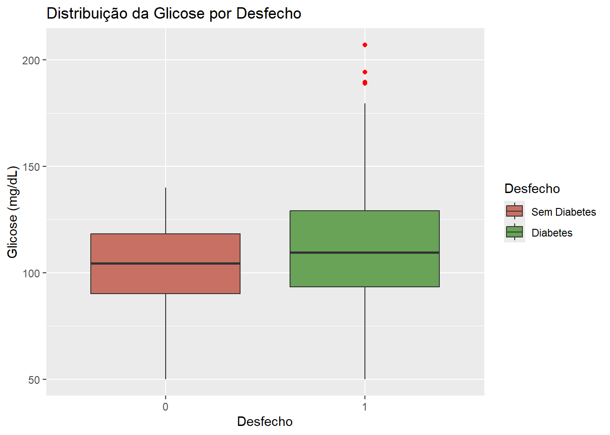

# Pacotes utilizados
# Essa estrutura carrega e instala os pacotes caso eles não estejam instalados ainda
if(!require(tidyverse)) install.packages("tidyverse")
if(!require(kableExtra)) install.packages("kableExtra")
if(!require(ggcorrplot)) install.packages("ggcorrplot")
if(!require(corrr)) install.packages("corrr")
if(!require(rstatix)) install.packages("rstatix")
# Para possíveis variáveis com valores muito pequenos ou muito grandes, essa opção
# evita a notaçào científica
options(scipen = 9999)Como vizualizar seu banco de dados - fazendo belos gráficos e tabelas
Muitas vezes uma análise descritiva e explotaória bem feita pode mudar os rumos da sua pesquisa. Esse é o momento ideal de pensar no seu objetivo de pesquisa, qual o escopo do seu trabalho e quais são as principais informações pelas quais se deve atentar.
Nesse tutorial usaremos o banco de dados disponível através do Kaggle aqui. Ele descreve mais de 9 mil registros médicos de pacientes associados ao risco de diabetes.
Antes de tudo, prepare o ambiente
Em programação, ter o código organizado é fundamental. Tanto para que você mesmo possa retornar às análises que fez e entender o que foi feito tanto para colaboração com outros pesquisadores.
Começaremos com as configurações do nosso ambiente, carregando os pacotes necessários e outras configurações.
Carregue seu banco
Para bancos de dados em plataformas como o Kagle, há n formas de carregar o banco além do tradicional baixar e carregar o arquivo. No meu caso eu fiz download do banco e subi ele para o gitHub do site já que vou utilizar esse mesmo dataset várias vezes.
# Navega pelas pastas e carrega o banco de dados em .csv
diabetes_dataset = read.csv("../../assets/datasets/diabetes_dataset.csv")Antes de fazer qualquer análise temos que verificar o banco. Faça algumas perguntas:
Todas as colunas foram lidas de forma correta?
As casas decimais foram configuradas corretamente?
Quais são os tipos de cada coluna?
Os caracteres estão bem configurados?
Para responder isso dois comando simples e um pouco de conhecimento do que cada variável significa basta.
# Mostra cada coluna, o tipo e as primeiras observações
glimpse(diabetes_dataset)Rows: 9,538
Columns: 17
$ Age <int> 69, 32, 89, 78, 38, 41, 20, 39, 70, 19, 47, 55, 19,…
$ Pregnancies <int> 5, 1, 13, 13, 8, 10, 16, 4, 3, 1, 8, 0, 15, 12, 6, …
$ BMI <dbl> 28.39, 26.49, 25.34, 29.91, 24.56, 17.47, 15.76, 28…
$ Glucose <dbl> 130.1, 116.5, 101.0, 146.0, 103.2, 67.0, 61.6, 105.…
$ BloodPressure <dbl> 77, 72, 82, 104, 74, 71, 60, 94, 90, 62, 93, 87, 60…
$ HbA1c <dbl> 5.4, 4.5, 4.9, 5.7, 4.7, 4.2, 4.0, 4.5, 4.0, 4.0, 4…
$ LDL <dbl> 130.4, 87.4, 112.5, 50.7, 102.5, 105.3, 62.4, 91.0,…
$ HDL <dbl> 44.0, 54.2, 56.8, 39.1, 29.1, 58.8, 43.4, 50.1, 51.…
$ Triglycerides <dbl> 50.0, 129.9, 177.6, 117.0, 145.9, 140.7, 64.6, 195.…
$ WaistCircumference <dbl> 90.5, 113.3, 84.7, 108.9, 84.1, 81.8, 66.5, 123.2, …
$ HipCircumference <dbl> 107.9, 81.4, 107.2, 110.0, 92.8, 93.2, 102.7, 121.4…
$ WHR <dbl> 0.84, 1.39, 0.79, 0.99, 0.91, 0.88, 0.65, 1.01, 0.7…
$ FamilyHistory <int> 0, 0, 0, 0, 0, 1, 0, 1, 0, 1, 0, 0, 0, 0, 0, 0, 0, …
$ DietType <int> 0, 0, 0, 0, 1, 0, 1, 0, 1, 0, 0, 0, 1, 2, 1, 1, 1, …
$ Hypertension <int> 0, 0, 0, 0, 0, 0, 0, 0, 0, 0, 0, 0, 0, 0, 0, 0, 0, …
$ MedicationUse <int> 1, 0, 1, 1, 0, 0, 0, 0, 1, 0, 0, 0, 0, 1, 1, 0, 0, …
$ Outcome <int> 0, 0, 0, 1, 0, 1, 0, 1, 0, 1, 0, 0, 0, 0, 1, 0, 0, …# Mostra as 6 primeiras linhas do banco de dados
head(diabetes_dataset) Age Pregnancies BMI Glucose BloodPressure HbA1c LDL HDL Triglycerides
1 69 5 28.39 130.1 77 5.4 130.4 44.0 50.0
2 32 1 26.49 116.5 72 4.5 87.4 54.2 129.9
3 89 13 25.34 101.0 82 4.9 112.5 56.8 177.6
4 78 13 29.91 146.0 104 5.7 50.7 39.1 117.0
5 38 8 24.56 103.2 74 4.7 102.5 29.1 145.9
6 41 10 17.47 67.0 71 4.2 105.3 58.8 140.7
WaistCircumference HipCircumference WHR FamilyHistory DietType Hypertension
1 90.5 107.9 0.84 0 0 0
2 113.3 81.4 1.39 0 0 0
3 84.7 107.2 0.79 0 0 0
4 108.9 110.0 0.99 0 0 0
5 84.1 92.8 0.91 0 1 0
6 81.8 93.2 0.88 1 0 0
MedicationUse Outcome
1 1 0
2 0 0
3 1 0
4 1 1
5 0 0
6 0 1Tudo certo! Podemos continuar.
Leitura do dicionário
O último passo antes de uma boa análise descritiva e exploratória é ler o dicionário de variáveis. Isso é fundamental para entender siglas que podem estar em outra língua, verificar a unidade de medida de cada variável e já identificar sobre qual o tipo de cada coluna.
- Idade (Age): Idade do indivíduo (18-90 anos).
- Gravidezes (Pregnancies): Número de vezes que a paciente esteve grávida. -IMC (Índice de Massa Corporal - BMI): Medida de gordura corporal baseada na altura e peso (kg/m²).
- Glicose (Glucose): Concentração de glicose no sangue (mg/dL), um indicador-chave de diabetes.
- Pressão Arterial (BloodPressure): Pressão arterial sistólica (mmHg), níveis elevados podem indicar hipertensão.
- HbA1c: Nível de hemoglobina glicada (%), representa a média de açúcar no sangue ao longo de meses.
- LDL (Lipoproteína de Baixa Densidade - Low-Density Lipoprotein): Nível de colesterol “ruim” (mg/dL).
- HDL (Lipoproteína de Alta Densidade - High-Density Lipoprotein): Nível de colesterol “bom” (mg/dL).
- Triglicerídeos (Triglycerides): Níveis de gordura no sangue (mg/dL), valores altos aumentam o risco de diabetes.
- Circunferência da Cintura (WaistCircumference): Medida da cintura (cm), indicador de obesidade central.
- Circunferência do Quadril (HipCircumference): Medida do quadril (cm), usada para calcular a relação cintura-quadril.
- Relação Cintura-Quadril (WHR - Waist-to-Hip Ratio): Circunferência da cintura dividida pela circunferência do quadril.
- Histórico Familiar (FamilyHistory): Indica se o indivíduo tem histórico familiar de diabetes (1 = Sim, 0 = Não).
- Tipo de Dieta (DietType): Hábitos alimentares (0 = Desequilibrado, 1 = Equilibrado, 2 = Vegano/Vegetariano).
- Hipertensão (Hypertension): Presença de pressão alta (1 = Sim, 0 = Não).
- Uso de Medicamentos (MedicationUse): Indica se o indivíduo faz uso de medicação (1 = Sim, 0 = Não).
- Resultado (Outcome): Diagnóstico de diabetes (1 = Diabetes, 0 = Sem Diabetes).
Análise univariada
Finalmente chegamos na etapa de criar gráficos e tabelas. Um importante conhecimento é saber distinguir variáveis contínuas (números e medidas) de variáveis categóricas (classificação de algum tipo, como raça e sexo).
Para variáveis conitínuas, as medidas resumo em uma única tabela são uma excelente forma de adicionar informação em um relatório. Para fins de você, pesquisador, entender seu banco de dados, criar histogramas é uma ótima forma de visualizar o que está acontecendo com cada coluna, perceber outliers e assimetria, mesmo que não os inclua no relatório.
Assim, para executar o histograma recomendo utilizar o pacote ggplot2, que traz um belo gráfico com relativamente pouco esforço.
diabetes_dataset %>% # Abre o banco de dados
select(WaistCircumference) %>% # Seleciona a variável de interesse
ggplot(aes(x = WaistCircumference)) + # Chama a função de criar gráficos colocando nossa var no eixo x
geom_histogram(fill = "#F2C354", color = "white") + # Cria o histograma com as cores desejadas
labs(title = "Histograma para Circunferência de Cintura em cm", # Adiciona título
x = "Circunferência de Cintuta (cm)", # E substitui o texto padrão dos eixos
y = "Frequência")`stat_bin()` using `bins = 30`. Pick better value with `binwidth`.E agora para a nossa tabela precisaremos de um pouco mais de código.
# Definimos os rótulos em português para cada variável categórica
rotulos_categoricas <- c(
FamilyHistory = "Histórico Familiar", # Indica se o indivíduo tem histórico familiar de diabetes (1 = Sim, 0 = Não)
DietType = "Tipo de Dieta", # Hábitos alimentares (0 = Desequilibrado, 1 = Equilibrado, 2 = Vegano/Vegetariano)
Hypertension = "Hipertensão", # Presença de pressão alta (1 = Sim, 0 = Não)
MedicationUse = "Uso de Medicamentos", # Indica se o indivíduo faz uso de medicação (1 = Sim, 0 = Não)
Outcome = "Resultado" # Diagnóstico de diabetes (1 = Diabetes, 0 = Sem Diabetes)
)
# Selecionamos apenas as variáveis categóricas com base nos rótulos definidos
variaveis_categoricas <- names(rotulos_categoricas)
# Calcular a frequência e a proporção para cada categoria das variáveis categóricas
resumo_categoricas <- diabetes_dataset %>% # Acessa o dataset
select(all_of(variaveis_categoricas)) %>% # Seleciona as colunas categóricas
pivot_longer(cols = everything(), names_to = "Variável", values_to = "Categoria") %>% # Converte o formato wide para long
group_by(Variável, Categoria) %>% # Agrupa pelos valores únicos das variáveis categóricas
summarise(Frequência = n(), .groups = "drop") %>% # Conta quantas vezes cada categoria aparece
mutate(Proporção = Frequência / sum(Frequência) * 100) %>% # Calcula a porcentagem relativa de cada categoria
mutate(Variável = recode(Variável, !!!rotulos_categoricas)) # Substitui os nomes das variáveis pelos rótulos em português
# Criamos a tabela formatada
resumo_categoricas %>% # Chama o resumo criado
kable("html",
caption = "Distribuição das variáveis categóricas", # Utiliza o kable da biblioteca kableExtra
align = "c", # Alinha o texto ao centro
col.names = c("Variável", "Categoria", "Frequência", "Proporção (%)")) %>% # Define os nomes das colunas
kable_styling(full_width = FALSE,
bootstrap_options = c("striped", "hover")) %>% # Aplica configurações de estilo
footnote(general = "Fonte: Elaborado pelo autor.", # Adiciona a fonte da tabela
general_title = "") %>%
add_header_above(c(" " = 1, "Estatísticas Descritivas" = 3)) # Adiciona um cabeçalho para as colunas de estatísticas| Variável | Categoria | Frequência | Proporção (%) |
|---|---|---|---|
| Tipo de Dieta | 0 | 5794 | 12.1492975 |
| Tipo de Dieta | 1 | 2851 | 5.9781925 |
| Tipo de Dieta | 2 | 893 | 1.8725100 |
| Histórico Familiar | 0 | 6653 | 13.9505137 |
| Histórico Familiar | 1 | 2885 | 6.0494863 |
| Hipertensão | 0 | 9528 | 19.9790312 |
| Hipertensão | 1 | 10 | 0.0209688 |
| Uso de Medicamentos | 0 | 5675 | 11.8997693 |
| Uso de Medicamentos | 1 | 3863 | 8.1002307 |
| Resultado | 0 | 6256 | 13.1180541 |
| Resultado | 1 | 3282 | 6.8819459 |
| Fonte: Elaborado pelo autor. |
Para outras formatações basta pesquisar um pouco na documentação do pacote kableExtra e entender o que precisa ser alterado.
Para variáveis categóricas, o processo é bem similar. Iremos criar um gráfico de barras (nunca de pizza!!) e uma tabela com as medidas resumo.
diabetes_dataset %>% # Abre o banco de dados
select(FamilyHistory) %>% # Seleciona a variável de interesse
ggplot(aes(x = as.factor(FamilyHistory))) + # Chama a função de criar gráficos colocando nossa var no eixo x como fator (ou seja var categorica)
geom_bar(fill = "#C97064", color = "white") + # Cria o ghráfico de barras com as cores desejadas
labs(title = "Distribuição para Histórico Familiar de Daibetes", # Adiciona título
x = "Possui histórico familiar? (0 = não, 1 = sim)", # E substitui o texto padrão dos eixos
y = "Frequência")Pode ser interessante também criar um gráfico para as proporções do grupo no eixo y, a fim de facilitar a vizualização. Basta alterar algumas linhas de código como se vê abaixo.
diabetes_dataset %>% # Abre o banco de dados
count(FamilyHistory) %>% # Conta as ocorrências de cada categoria
mutate(Proporção = n / sum(n)) %>% # Calcula a proporção
ggplot(aes(x = as.factor(FamilyHistory), y = Proporção)) + # Define os eixos
geom_col(fill = "#68A357", color = "white") + # Cria o gráfico de barras
labs(title = "Distribuição do Histórico Familiar de Diabetes", # Adiciona título
x = "Possui histórico familiar? (0 = não, 1 = sim)", # E substitui o texto padrão dos eixos
y = "Proporção") Por fim, agora vamos fazer as tabelas para as variáveis categóricas.
# Definimos os rótulos em português para cada variável categórica
rotulos_categoricas <- c(
FamilyHistory = "Histórico Familiar", # Indica se o indivíduo tem histórico familiar de diabetes (1 = Sim, 0 = Não)
DietType = "Tipo de Dieta", # Hábitos alimentares (0 = Desequilibrado, 1 = Equilibrado, 2 = Vegano/Vegetariano)
Hypertension = "Hipertensão", # Presença de pressão alta (1 = Sim, 0 = Não)
MedicationUse = "Uso de Medicamentos", # Indica se o indivíduo faz uso de medicação (1 = Sim, 0 = Não)
Outcome = "Resultado" # Diagnóstico de diabetes (1 = Diabetes, 0 = Sem Diabetes)
)
# Selecionamos apenas as variáveis categóricas com base nos rótulos definidos
variaveis_categoricas <- names(rotulos_categoricas)
# Calcular a frequência e a proporção para cada categoria das variáveis categóricas
resumo_categoricas <- diabetes_dataset %>% # Acessa o dataset
select(all_of(variaveis_categoricas)) %>% # Seleciona as colunas categóricas
pivot_longer(cols = everything(), names_to = "Variável", values_to = "Categoria") %>% # Converte o formato wide para long
group_by(Variável, Categoria) %>% # Agrupa pelos valores únicos das variáveis categóricas
summarise(Frequência = n(), .groups = "drop") %>% # Conta quantas vezes cada categoria aparece
mutate(Proporção = Frequência / sum(Frequência) * 100) %>% # Calcula a porcentagem relativa de cada categoria
mutate(Variável = recode(Variável, !!!rotulos_categoricas)) # Substitui os nomes das variáveis pelos rótulos em português
# Ajustamos para remover a repetição do nome da variável
resumo_categoricas <- resumo_categoricas %>%
group_by(Variável) %>%
mutate(Variável = ifelse(row_number() == 1, Variável, "")) %>% # Mantém o nome apenas na primeira linha de cada grupo
ungroup()
# Criamos a tabela formatada
resumo_categoricas %>% # Chama o resumo criado
kable("html",
caption = "Distribuição das variáveis categóricas", # Utiliza o kable da biblioteca kableExtra
align = "c", # Alinha o texto ao centro
col.names = c("Variável", "Categoria", "Frequência", "Proporção (%)")) %>% # Define os nomes das colunas
kable_styling(full_width = FALSE,
bootstrap_options = c("striped", "hover")) %>% # Aplica configurações de estilo
footnote(general = "Fonte: Elaborado pelo autor.", # Adiciona a fonte da tabela
general_title = "") %>%
add_header_above(c(" " = 1, "Estatísticas Descritivas" = 3)) # Adiciona um cabeçalho para as colunas de estatísticas| Variável | Categoria | Frequência | Proporção (%) |
|---|---|---|---|
| Tipo de Dieta | 0 | 5794 | 12.1492975 |
| 1 | 2851 | 5.9781925 | |
| 2 | 893 | 1.8725100 | |
| Histórico Familiar | 0 | 6653 | 13.9505137 |
| 1 | 2885 | 6.0494863 | |
| Hipertensão | 0 | 9528 | 19.9790312 |
| 1 | 10 | 0.0209688 | |
| Uso de Medicamentos | 0 | 5675 | 11.8997693 |
| 1 | 3863 | 8.1002307 | |
| Resultado | 0 | 6256 | 13.1180541 |
| 1 | 3282 | 6.8819459 | |
| Fonte: Elaborado pelo autor. |
Análise bivariada
A análise univariada tem como objetivo entender a distribuição da variável em si. Já na análise bivariada (e multivariada), queremos entender qual a relação das variáveis entre si. Note que não estou buscando a causalidade nem no valor preditivo de cada variável, isso será uma etapa posterior a depender do seu objetivo de pesquisa.
Podemos começar com um correlograma, que traz um mapa das correlações de todas as variáveis contínuas entre si. É muito útil para identificar se há alguma colinearidade entre variáveis, que deve ser confirmada depois através dos testes apropriados.
# Selecionamos apenas as variáveis contínuas
variaveis_continuas <- c("Age", "BMI", "Glucose", "BloodPressure", "HbA1c",
"LDL", "HDL", "Triglycerides", "WaistCircumference",
"HipCircumference", "WHR")
# Criamos a matriz de correlação
matriz_correlacao <- diabetes_dataset %>%
select(all_of(variaveis_continuas)) %>% # Seleciona apenas as variáveis contínuas
cor(use = "pairwise.complete.obs") # Calcula a correlação excluindo valores NA
# Criamos o correlograma
ggcorrplot(matriz_correlacao,
method = "circle", # Define o estilo do gráfico (círculos)
type = "lower", # Mostra apenas a metade inferior da matriz
lab = TRUE, # Exibe os valores das correlações
lab_size = 3, # Tamanho da fonte dos rótulos
colors = c("#6D9EC1", "white", "#E46726"), # Define a paleta de cores
title = "Correlograma das Variáveis Contínuas", # Adiciona um título
ggtheme = theme_minimal()) # Aplica um tema minimalistaOutra forma de correlação muito importante, principalmente para estudos de predição, é a correlação de cada variável com o desfecho.
# Definimos variáveis contínuas e categóricas
variaveis_continuas <- c("Age", "BMI", "Glucose", "BloodPressure", "HbA1c",
"LDL", "HDL", "Triglycerides", "WaistCircumference",
"HipCircumference", "WHR")
variaveis_categoricas <- c("FamilyHistory", "DietType", "Hypertension",
"MedicationUse")
# --- Correlação para variáveis contínuas com Outcome ---
correlacoes_continuas <- diabetes_dataset %>%
select(all_of(variaveis_continuas), Outcome) %>%
cor(use = "pairwise.complete.obs") %>%
as.data.frame() %>%
select(Outcome) %>%
rownames_to_column(var = "Variável") %>%
rename(`Correlação` = Outcome) %>% # Renomeia para manter consistência
mutate(Tipo = "Contínua")
# --- Correlação para variáveis categóricas com Outcome ---
calcular_cramer <- function(var) {
tab <- table(diabetes_dataset[[var]], diabetes_dataset$Outcome)
cramer <- rstatix::cramer_v(tab) %>% as.numeric() # Converte para número
return(data.frame(Variável = var, `Correlação` = cramer, Tipo = "Categórica"))
}
correlacoes_categoricas <- bind_rows(lapply(variaveis_categoricas, calcular_cramer))Warning in stats::chisq.test(x, y, correct = correct, ...): Aproximação do
qui-quadrado pode estar incorreta# --- Juntamos todas as correlações ---
correlacoes_totais <- bind_rows(correlacoes_continuas, correlacoes_categoricas) %>%
arrange(desc(abs(Correlação))) # Ordena pela força da correlação
# Defininmos os rótulos em português para todas as variáveis
rotulos <- c(
Age = "Idade (anos)",
BMI = "Índice de Massa Corporal (kg/m²)",
Glucose = "Glicose (mg/dL)",
BloodPressure = "Pressão Arterial (mmHg)",
HbA1c = "Hemoglobina Glicada (%)",
LDL = "Colesterol LDL (mg/dL)",
HDL = "Colesterol HDL (mg/dL)",
Triglycerides = "Triglicerídeos (mg/dL)",
WaistCircumference = "Circunferência da Cintura (cm)",
HipCircumference = "Circunferência do Quadril (cm)",
WHR = "Relação Cintura-Quadril",
FamilyHistory = "Histórico Familiar",
DietType = "Tipo de Dieta",
Hypertension = "Hipertensão",
MedicationUse = "Uso de Medicamentos"
)
# Removemos a correlação de Outcome consigo mesmo
correlacoes_totais <- correlacoes_totais %>%
filter(Variável != "Outcome") %>%
mutate(Variável = recode(Variável, !!!rotulos)) # Aplicar rótulos
# Exibimos a tabela formatada
correlacoes_totais %>%
mutate(Correlação = round(Correlação, 3)) %>% # Arredonda valores
kable("html",
caption = "Correlação de Todas as Variáveis com o Desfecho",
align = "c",
col.names = c("Variável", "Correlação", "Tipo")) %>% # Define nomes das colunas
kable_styling(full_width = FALSE,
bootstrap_options = c("striped", "hover")) %>% # Estilização
footnote(general = "Fonte: Elaborado pelo autor.",
general_title = "") %>%
add_header_above(c(" " = 1, "Correlação com o Desfecho" = 2)) # Cabeçalho superior| Variável | Correlação | Tipo |
|---|---|---|
| Histórico Familiar | 0.909 | Categórica |
| Glicose (mg/dL) | 0.168 | Contínua |
| Hemoglobina Glicada (%) | 0.152 | Contínua |
| Índice de Massa Corporal (kg/m²) | 0.107 | Contínua |
| Pressão Arterial (mmHg) | 0.096 | Contínua |
| Circunferência da Cintura (cm) | 0.087 | Contínua |
| Circunferência do Quadril (cm) | 0.083 | Contínua |
| Idade (anos) | 0.068 | Contínua |
| Uso de Medicamentos | 0.064 | Categórica |
| Hipertensão | 0.028 | Categórica |
| Relação Cintura-Quadril | 0.022 | Contínua |
| Colesterol LDL (mg/dL) | 0.019 | Contínua |
| Tipo de Dieta | 0.016 | Categórica |
| Colesterol HDL (mg/dL) | -0.009 | Contínua |
| Triglicerídeos (mg/dL) | -0.008 | Contínua |
| Fonte: Elaborado pelo autor. |
A partir das correlações dadas podemos criar gráficos bivariados com a variável de interesse e uma covariável.
Para covariável contínua, utilizaremos o boxplot como visualização e para variáveis categóricas gráficos de barras empilhadas.
diabetes_dataset %>% # Abre o banco de dados
ggplot(aes(x = as.factor(FamilyHistory), fill = as.factor(Outcome))) + # Chama a função de gráficos preenchendo com o desfecho
geom_bar(position = "fill", color = "white") + # Proporção dentro de cada grupo
scale_fill_manual(values = c("#C97064", "#68A357"), labels = c("Sem Diabetes", "Diabetes")) + # Escolhe as cores
labs(title = "Distribuição do Histórico Familiar por Desfecho", # Adiciona título
x = "Histórico Familiar (0 = Não, 1 = Sim)", # Adiciona legendas
y = "Proporção",
fill = "Desfecho")diabetes_dataset %>% # Abre o banco de dados
ggplot(aes(x = as.factor(Outcome), y = Glucose, fill = as.factor(Outcome))) + # Chama a função de gráficos com preenchimento com o desfecho
geom_boxplot(outlier.color = "red", outlier.shape = 16) + # Cria o boxplot
scale_fill_manual(values = c("#C97064", "#68A357"), labels = c("Sem Diabetes", "Diabetes")) + # Escolhe as cores
labs(title = "Distribuição da Glicose por Desfecho", # Adiciona título
x = "Desfecho", # Adiciona legendas
y = "Glicose (mg/dL)",
fill = "Desfecho")
Considerações finais
O passo a passo sugerido aqui é tanto para criação de relatórios iniciais tanto quanto para o próprio pesquisador entender melhor a base de dados trabalhada. É fundamental fazer cada etapa com cuidado e perceber a necessidade de pré-processamento das variáveis, como ajuste de character para factor, e adaptar os scripts conforme a necessidade.
Espero ter ajudado!